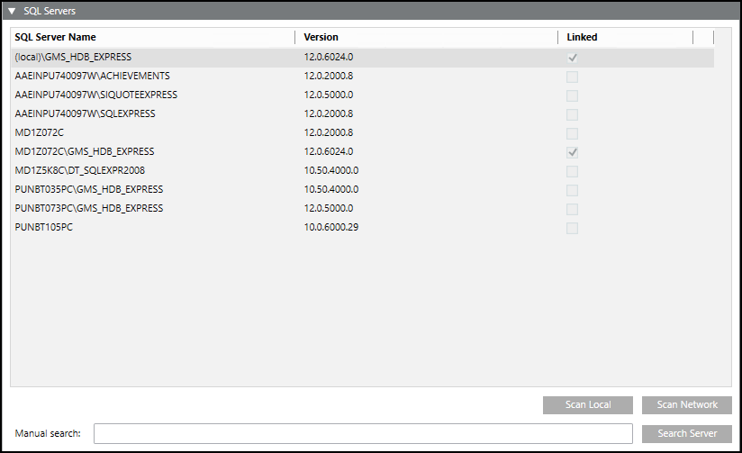

Link the SQL Server Instance to the SMC
You must link the SQL server instance, using its Fully Qualified Domain Name (FQDN), to the SMC.
- In the SMC tree, select History Databases.
- Open the SQL Servers expander.
- Type the SQL server instance name with the fully qualified domain name (host name + domain) in the Manual search field and click Search Server.
- The fully qualified server instance name appears in the list in the SQL Servers expander.
- Select the server instance from the list and select the Linked check box.
- Create your HDB on this instance.
- The HDB instance is created.
